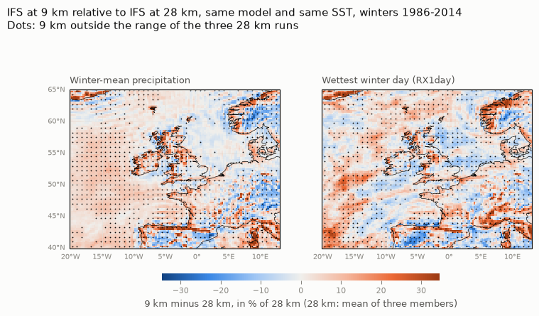
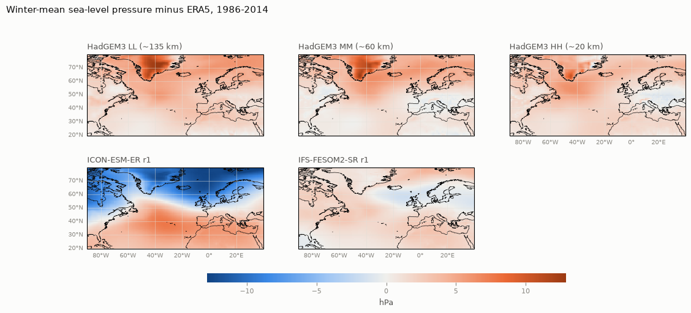

HighRes-EERIE-NorthAtlantic-Evaluation asks how well two high-resolution climate models, ICON-ESM-ER and
IFS-FESOM2-SR, represent winter extremes over the UK and Ireland and their atmospheric drivers, and
how far those conclusions can be trusted. The work follows one chain: each step is checked against
observations before the next one builds on it.
Read this first. This is a research prototype. Version 1 evaluated a single run of each coupled model;
version 2 adds two more runs per model, 100-year control runs and a third model at three resolutions. Single runs carry their own chance
weather, so the verdicts below are indications, not a ranking of the models. The main contribution is the
evaluation method and diagnostic pipeline, which can be rerun on more members, models, CMIP6 and CMIP7.
The story in one figure. Read each row from left to right: (A) average winter pressure minus ERA5,
expressed as an NAO state; (B) the model's NAO pattern against ERA5's (black lines) and its strength; (C) correlation of
winter very-wet-day rain with the NAO; (D) very-wet-day rain relative to E-OBS. ICON-ESM-ER (top) is biased at every
step, with 62% more winter R95p than E-OBS over UK and Ireland (regional land average). IFS-FESOM2-SR (bottom) generally
represents circulation and rain extremes more realistically, although its NAO is too weak (71% of ERA5's) and its southern
centre weaker and displaced. Winters 1986–2014 (B: 1951–2014), one run per model.
Main message. A credible large-scale circulation is a precondition for credible regional rain
extremes, but not a guarantee: in ICON-ESM-ER the shifted circulation explains only part of the wet bias, and in IFS
higher resolution shifts rain extremes by 5–12% but leaves their link to the NAO within the range that chance alone
produces.
1 · DATA
Find and prepare
Public EERIE output, ERA5 and E-OBS, cut to three nested regions, checked and harmonised.
2 · EVALUATION
Is the climate right?
Mean circulation, temperature and rain; then extremes: RX1day, TXx, R95p.
3 · DRIVERS
Why do extremes happen?
The NAO, its link to extremes, and the weather behind the heaviest rain days.
4 · TRUST
How far to trust it?
Resolution, internal variability between identical runs, and disagreement between references.
close to observationspartly rightclearly biasedfact or method
1 · Data
From 945 public datasets to one tested archive
Which simulations have what we need, and can they actually be read?
945 datasets inventoried on the DKRZ server; 11 runs from two models have all the daily and monthly fields needed.Three domains: North Atlantic (NAO), north-west Europe (extremes), UK and Ireland (headline), plus western Norway and north-west France.Periods: 1950–2014 monthly (64 winters for the NAO), 1985–2014 daily (a standard 30-year period).About 250–300 GB streamed, 4.2 GB kept; every source in the same units, time stamps and grid.
How to read. The three nested analysis regions on a longitude–latitude map. Largest box: the North
Atlantic (20–80°N, 90°W–40°E), where the NAO pattern is computed from sea-level pressure. Middle box: north-west Europe,
where temperature, rainfall and extremes are evaluated on a common 0.25° grid. Smallest box: UK and Ireland, the headline
region for all regional averages. Western Norway and north-west France are used as contrasts on the wet and dry sides
of the NAO.
2 · Evaluation
Mean winter climate
Before trusting extremes: is the basic winter climate credible?
IFS-FESOM2-SR: winter pressure close to ERA5 (typical difference 1.8 hPa, pattern correlation 0.99).ICON-ESM-ER: pressure too low in the north, too high in the subtropics: westerlies too strong; winter rain +29%.Both about 0.8 °C too cold in winter.
Why it matters. A too-strong pressure drop from the subtropics to Iceland drives too-strong
westerlies, which carry more moist Atlantic air onto windward coasts and mountains. ICON-ESM-ER's average winter
therefore looks like a strongly positive NAO winter.
How to read. Average winter (December–February) sea-level pressure of each model minus ERA5,
1985–2014, in hPa. Orange: pressure too high; blue: too low; pale: close to ERA5. ICON-ESM-ER (left) shows a north–south
dipole: up to about 14 hPa too low near Iceland and the Arctic and up to about 8 hPa too high over the subtropical
Atlantic and Mediterranean. A stronger pressure drop from south to north means stronger westerly winds into Europe.
IFS-FESOM2-SR (right) stays within a few hPa almost everywhere.
Extremes
How heavy is the wettest day, how hot the hottest?
IFS-FESOM2-SR: wettest day of the year over UK and Ireland +8% against E-OBS, +17% against ERA5; hottest day within 1 °C of ERA5.ICON-ESM-ER: wettest day +48% / +60%; hottest day about 2 °C too cool.Most of IFS-FESOM2-SR's apparent hot-day deficit against stations is a grid-cell-versus-station effect, revealed by adding ERA5.
Why it matters. ICON-ESM-ER's wet bias covers inland France and Iberia, not only the windward
coasts a too-strong westerly flow would wet. It is far larger than chance: identical runs differ by only 1–3% in these
30-year averages.
How to read. The wettest day of the year (RX1day), averaged over 1985–2014, of each model
relative to each reference, in percent of the reference. Top row against E-OBS (stations, land only, so the sea is
blank); bottom row against ERA5 (reanalysis, land and sea). Left column ICON-ESM-ER, right column IFS-FESOM2-SR. Orange:
the model's wettest day is heavier than observed; blue: lighter. ICON-ESM-ER is orange almost everywhere, typically
+50%; IFS-FESOM2-SR is mostly pale, within about ±20%. The bias against ERA5 is larger because ERA5's extremes are lower
than E-OBS's.
3 · Drivers
The North Atlantic Oscillation
Is the main driver of winter weather realistic?
IFS-FESOM2-SR: recognisable NAO (pattern correlation 0.87), strength 71% of ERA5's.ICON-ESM-ER: leading pattern mixed across two modes, strength 59% (strength: standard deviation of the winter index along the common ERA5 pattern, relative to ERA5's); its average winter resembles a +2.3 SD positive NAO.
Why "mixed". ICON-ESM-ER's first two patterns explain 29% and 21% of the variance, closer than
their sampling error allows to separate (North et al. 1982), so the real NAO is split between them (overlaps 0.76 and
0.58). The mixing persists in all five domains tested for this run; but in runs r2 and r3 (version 2) the pattern resembles
ERA5's closely (0.90 and 0.94), so it was largely the chance of run r1. The NAO
strengths along ERA5's pattern barely change (0.56–0.61 and 0.68–0.72). Every model is therefore measured along the
common ERA5 pattern.
How to read. The leading pattern of winter sea-level-pressure variability (first EOF), 64
winters 1951–2014, in hPa per +1 standard deviation of each dataset's own index. Blue: lower pressure in a positive-NAO
winter; orange: higher. ERA5 (left) shows the textbook NAO: low near Iceland, high near the Azores. IFS-FESOM2-SR
(right) has the same dipole, with a weaker southern centre shifted towards the Mediterranean. ICON-ESM-ER (middle) has
its southern centre over Europe and the North Sea: its leading pattern mixes the NAO with a second mode.
From the NAO to extremes
Do positive-NAO winters bring heavier rain extremes, as in the real world?
IFS-FESOM2-SR reproduces the link in sign and pattern (UK and Ireland correlation 0.60 in r1).ICON-ESM-ER: right sign in the north (0.36), weak in Norway, wrong sign over north-west France.Version 2: over UK and Ireland three runs of one model span 0.06–0.49 (ICON-ESM-ER) and 0.21–0.60 (IFS-FESOM2-SR), so the models cannot be ranked there; over western Norway both are too weak in every run.Observed: 0.51 in E-OBS, 0.35 in ERA5; strong in western Norway (0.81).How certain: over UK and Ireland the bootstrap 95% intervals (about ±0.25) overlap for all four datasets, so 29 winters cannot tell them apart. ICON-ESM-ER's weak link in Norway and wrong sign in France do pass formal tests. No single winter drives any value.
How to read. Correlation between the winter NAO and winter very-wet-day rain (R95p),
land average of each region, 29 winters 1986–2014, both series detrended. One panel per region. Dots: the correlation;
bars: bootstrap 95% interval (winters resampled 5000 times). Grey line: zero. Light grey E-OBS and dark grey ERA5 are
the references, each paired with the ERA5 NAO; blue ICON-ESM-ER and orange IFS-FESOM2-SR use their own NAO. Overlapping
bars mean the values cannot be told apart in 29 winters: true for all four over UK and Ireland. ICON-ESM-ER's bar lies
below both references in western Norway and on the wrong side of zero in north-west France.
Does the circulation explain the wet bias?
If ICON-ESM-ER's only error were its shifted circulation, how wet would it be?
Method: observed change in rain extremes per SD of NAO × the model's mean circulation offset (2.1 SD along the NAO).Consistent with 38–74% of ICON-ESM-ER's very-wet-day rain bias and 18–39% of its wettest-day bias over UK and Ireland, mostly on windward coasts and mountains.The rest is a broad wet bias: ICON-ESM-ER rains too often (+34% to +43% wet days) and too hard (+21% to +28% rain per wet day). IFS-FESOM2-SR is within about 10% on both.
Reading it. A linear decomposition test: an association supported by diagnostics, not a
demonstrated cause. It applies the response of ordinary NAO winters to an offset beyond most of them. The remainder
may come from how the model makes rain, from circulation errors that do not project onto the NAO, or from a
non-linear response of storms to a shifted mean flow.
How to read. ICON-ESM-ER's winter very-wet-day rain (R95p) bias against E-OBS, in mm per
winter, 1986–2014, land only. Left: the actual bias. Middle: the bias its mean circulation offset alone would produce,
computed as the observed change in R95p per +1 SD of NAO times the model's offset of 2.1 SD. Right: the remainder,
actual minus expected. The middle panel puts extra rain on windward coasts and mountains (western Scotland, western
Norway) and less rain in the south. The right panel stays orange over most of the continent and Iberia: a wet bias that
the circulation offset does not account for. A linear decomposition test, not a proof of cause.
The weather behind the heaviest rain
Do the models get heavy rain for the right reason?
Both models: the same deep low north-west of the islands as ERA5 on the event day (pattern correlation 0.94–0.95).Build-up two days earlier: IFS-FESOM2-SR 0.85, ICON-ESM-ER 0.72.Day-to-day pressure variability 13–17% higher over the UK than ERA5 (enhanced synoptic storminess; a proxy, cyclones not tracked); persistent highs slightly too rare.
How to read. Average sea-level-pressure anomaly, in hPa, on the 30 wettest winter days
over UK and Ireland land, 1986–2014, with events at least five days apart. Each panel uses the dataset's own wettest days
and its own winter-mean pressure. The E-OBS panel shows ERA5 pressure on E-OBS's wettest days. Blue: lower pressure than
usual, the storm; orange: higher. All four show a deep low just north-west of Ireland and Scotland with higher pressure
to the south: south-westerly flow carrying moist Atlantic air onto the islands. Pattern correlation with ERA5: 0.94–0.95
for both models.
4 · How far to trust it
Resolution
Same model, same ocean, 9 km instead of 28 km: are rain extremes better?
9 km gives 5–12% heavier winter rain extremes, mostly beyond the spread between 28 km members.Closer to observations over the mountains of western Norway.Overshoots over the UK and Ireland; no overall gain at the 25 km scale compared.The NAO link to UK and Ireland rain extremes at 9 km (0.19) lies inside the range of the three 28 km runs (0.04 to 0.33): it changes more by chance than by resolution.
Why this test is clean. Comparing two different models mixes resolution with everything else.
Here only the grid spacing differs: same model, same sea-surface temperature, same years. Both runs are compared on a
common 0.25° grid, so the question is whether running at 9 km improves rain at the 25 km scale. Both use parameterised
convection; at 9 km the model is in the convective "grey zone".
Notebook 08 · 1 run at 9 km, 3 members at 28 km, winters 1986–2014

How to read. The same atmosphere model (IFS) with the same observed sea-surface temperature,
run at 9 km and at 28 km. Each map shows the 9 km run minus the average of three 28 km runs, as a percentage of the 28 km
value, winters 1986–2014, both on the same 0.25° grid. Left: average winter precipitation. Right: the wettest winter day.
Orange: wetter at 9 km; blue: drier. Dots: the 9 km value lies outside the range of the three 28 km runs, so the
difference is larger than chance alone produces between identical runs. Orange with dots along west-facing coasts and
mountains (western Norway, western Scotland, the Alps) is a resolution effect. Colour without dots is within chance. Over the
open Atlantic the 9 km run is a few percent wetter in the winter mean; the 28 km runs differ so little there that even this
small change is dotted.
Internal variability
How much do identical runs differ by chance alone?
NAO strength in ten identical runs: from 0.70 to 1.00 of ERA5's.NAO link to UK and Ireland rain extremes in three identical runs: correlation from 0.04 to 0.33; 9 km (0.19) lies inside that range.Filtering small-scale sea-surface temperature: −1% and +4% change in NAO strength, far inside the spread (no detectable change in NAO strength; atmosphere-only, not a coupled test).
How to read. NAO strength of every member of three ten-member atmosphere-only
ensembles of IFS at 28 km, 43 winters 1981–2023. Strength is the standard deviation of the winter index along the ERA5
pattern, in ERA5 units. One dot per member; black bar: ensemble mean; dashed line: ERA5. Top row: observed sea-surface
temperature; middle and bottom: two variants with small-scale temperature detail filtered out. The members of one
experiment range from 0.70 to 1.00, purely by chance; the three experiments overlap almost completely.
Version 2 · Model or chance, and a resolution ladder
Three runs of each coupled model
Which version 1 results are model properties, and which were a single run's chance?
Two more historical runs (r2, r3) of ICON-ESM-ER and IFS-FESOM2-SR, processed exactly like r1.Robust in all three runs: ICON-ESM-ER's mean-circulation offset (+1.9 to +2.1 SD) and wet bias (R95p +50% to +62%), both models' too-cool hottest day, too-weak NAO (0.55–0.63 and 0.68–0.81 of ERA5) and wet-day statistics.Chance: the NAO link over UK and Ireland (0.06–0.49 and 0.21–0.60) and ICON-ESM-ER's "mixed" NAO pattern (r1 only).New robust finding: over western Norway all six runs have a weaker NAO link (0.52–0.71) than observed (0.81).
Notebook 10 · winters 1976–2014 (NAO) and 1986–2014 (extremes)
How to read. Correlation between the winter NAO and winter very-wet-day rain (R95p), land average of each region, 1986–2014, with bootstrap 95% intervals. References first (light grey E-OBS, dark grey ERA5), then the three runs of ICON-ESM-ER (blue) and IFS-FESOM2-SR (orange). Over UK and Ireland the three dots of one model scatter as widely as their bars; over western Norway all six lie below the references.
How much can chance alone do?
100 years of each model with constant 1950 forcing, cut into windows of 29 winters.
No 29-winter window of either model reaches the observed NAO strength (strongest: 0.80 and 0.95 against ERA5's 1.04).No window reaches the observed NAO link over western Norway (control maxima 0.77 and 0.78 against 0.81).ICON-ESM-ER almost never produces the observed positive link over north-west France (median −0.14): a model property.Several historical runs fall outside their control range, so these ranges understate chance: they are lower bounds.
Notebook 11 · control runs 1950–2049, 71 overlapping windows
How to read. For each region and model, the shaded box spans the NAO–R95p correlation in 90% of 29-winter windows of the control run (line: median). Dots: the three historical runs, 1986–2014. Dashed lines: E-OBS (light) and ERA5 (dark). A reference line far outside a model's box means the model rarely produces what was observed, as over western Norway for both models.
One coupled model at three resolutions
HadGEM3-GC5 at about 135, 60 and 20 km, ocean from 1° to eddy-rich 1/12°: does the circulation improve?
Winter pressure error falls with resolution: 3.2, 2.7, 2.6 hPa; the NAO pattern sharpens (0.92, 0.95, 0.98 with ERA5).NAO strength does not follow resolution (0.78, 0.92, 0.76): it changes as much between the two halves of one run.UK and Ireland winters 25% wetter than ERA5 at 20 km, against +7% to +8% at the coarser grids.Jet about 1.5° too far north at 135 km, close to ERA5 at 60 km. Only monthly data are public, so no extremes.
Notebook 12 · one member per resolution, 1951–2014

How to read. Average winter sea-level pressure minus ERA5, 1986–2014, in hPa. Top row: HadGEM3 at about 135 km (LL), 60 km (MM) and 20 km (HH). Bottom row: ICON-ESM-ER and IFS-FESOM2-SR r1. Orange: too high; blue: too low. The HadGEM3 errors shrink from left to right; none of them has ICON-ESM-ER's large north–south dipole.
What holds
Confirmed in three runs: ICON-ESM-ER's circulation bias and a wet bias partly consistent with it, plus a broad wet bias of its own; IFS-FESOM2-SR's credible circulation and extremes; a too-weak NAO in both; both models' too-weak NAO link over western Norway; both models' realistic heavy-rain weather pattern.
What is uncertain
The strength of the NAO link over the UK: three runs of one model span as much as the two models and the two references. The exact NAO strength of any single run or period.
What is not tested
Model complexity; air quality; coupled sensitivity to ocean eddies; summer drivers; the future.
In one table
Question
ICON-ESM-ER
IFS-FESOM2-SR
Mean winter circulation
too-strong north–south contrast
close to ERA5
NAO pattern / strength
mixed / 59%
recognisable / 71%
Wettest day, UK and Ireland
+48% to +60%
+8% to +17%
Wet-bias share consistent with the circulation
38–74% (very wet days), 18–39% (wettest day)
offset small (0.2 SD)
Wet days / rain per wet day, UK and Ireland
+34–43% / +21–28%
+3–10% / +5–11%
Hottest day, against ERA5
−2.0 °C
−0.6 °C
NAO link to winter rain extremes
right sign over UK; too weak in Norway, wrong sign in France
reproduced in all three regions
Weather behind the heaviest rain
right pattern, weaker build-up
right pattern and build-up
Storminess over the UK (day-to-day pressure variability)
+17%
+13%
Status and future scope
This is a research prototype: a complete, tested chain from public data to conclusions, run on what one laptop and
the public archive allow (two coupled models with three runs each and their control runs for extremes, a third model at three resolutions for the circulation, 29 winters of daily data). It is built to be scaled up.
More members
Version 2 uses three runs per model and the control runs. Ten or more runs per model would turn the remaining "chance" results, such as the NAO link over the UK, into firm ranges.
More models
Other EERIE configurations, HighResMIP, CMIP6 and CMIP7 through the same code, to place these two models in a multi-model spread and test resolution across models.
More science
Rain-producing processes behind the wet bias; longer daily records; summer drivers; physical climate storylines built on the heavy-rain event composites.
Scaling up technically
Run next to the data on DKRZ Levante or JASMIN instead of streaming to a laptop; Dask distributed across members and years; a CMIP reader; block bootstrap, conservative regridding, cyclone tracking. Details: How it is built.
Exploratory results: version 1 used one run per coupled model; version 2 adds two more runs per model, 100-year control runs and HadGEM3-GC5 at three resolutions. Full methods on the methods page; every number comes from the executed notebooks.